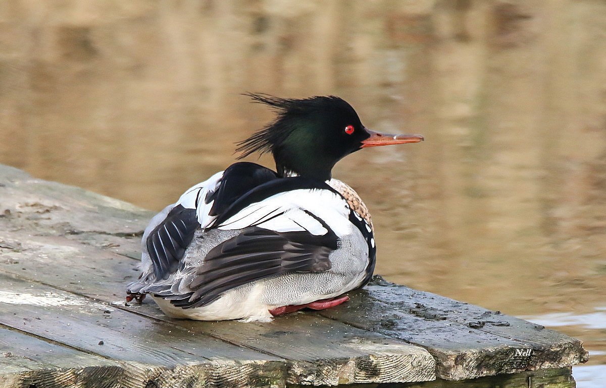

The crested merganser is a diving duck. Its red slender beak, its black head with green reflections, its collar
white and its crest give it an inimitable style. The male is easy to recognize with his double crest, his
white collar and reddish chest spotted with black. On the other hand, females and juveniles resemble
strongly to those of the Goosander. However, the seasoned observer will easily distinguish between
two species. In fact, female and juvenile Goosanders show a very clear separation between the
brown head and white neck whereas crested merganser females and juveniles see the brown of the head
blend seamlessly into the gray of the neck.
The merganser takes its name from its habit of swimming with its body submerged (Mergus, from mergere, to submerge).
Size: 58cm
Wingspan: 70 to 86 cm
Weight: 1000 to 1250 g
Longevity: 9 years
Order: Anseriformes
Family: Anatidae
Genre: Mergus
Species: Serrator
Usually silent, the rather soft disyllabic call of the displaying male responds to the hoarse, growling kokokok
of the female.